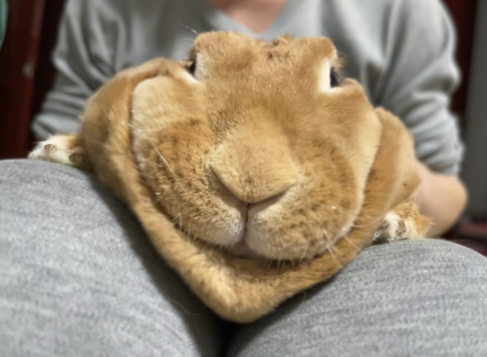

婚礼可以取消，日子该咋过还咋过[看]
这三人之间应该是达成了某一种协议 [看]
经民警劝导才取消三人婚礼，那拍婚纱照的时候是闹着玩的？
不知道这位大哥是怎么挣钱的！我感觉我今年真的难啊，往年接孩子放学我都是买两根烤肠。我和孩子一人吃一根，过完年开始我都是只买一根了，吃完我才去接孩子。
狗儿要唱狗儿歌，毛毛要摘毛毛果，小猫不能进被窝[流泪][流泪][流泪]
此情可待成追忆[流泪]
悟空最后几期的嘴角伤口跟刚遇见时候的伤口在一个位置，还有蜱虫，都跟第一次进帐篷的时候一样，冥冥之中一切都是命运的安排。坚信朔哥跟臭喵会再遇到的，他们的缘分不止于此
“答应我 再见的时候，你一定要认出我”
“你好悟空，你要吃橙子吗” “你好毛毛，我跟你讲探险的故事吧”
悟空：芦苇为什么是黄色的 赵朔：等到夏天就变成绿色的了
这首BGM中的两大真神，普洁和悟空[流泪][流泪][流泪] 人世间的面，见一面，少一面。 九九八十一难，经一难，少一难。 悟空的离别带走的是师傅的一切苦难，留给师傅的却是师傅原本习以为常而现在却不敢面对的孤独[流泪]
这一幕[流泪]
晚安悟空[流泪]
当时看到这张图片之后哭死了
之前只知道这是他们的背景音乐，现在才知道歌词的含义[流泪][流泪][流泪]
刷了这么久的抖音，也看到很多网红小猫小狗去世心里都没啥感觉，但是前天刷到悟空去世的视频心里咯噔了一下，真的接受不了
她这张小脸儿就没变过[眼含热泪][眼含热泪][眼含热泪]
无忧渡正在看，她长得确实好看！我表妹就像她跟林青霞的结合
小时候的台词就秒了内娱一片[黑脸]
这才是真正的等比例放大[猪头]
人贩子就该枪毙！应该和贩毒同罪
孩子家人应该重谢这位好心大姐，为好心大姐点赞[赞][赞][赞][赞][赞]
该改造的本不应该是他
用词不对啊 为什么要用“改造”这个词啊 这分明是被治愈的[裂开]
我滴个老天爷啊，它怎么这么多话
国家一遍遍催婚，你们一部部拆台
香港大叔说老子年轻的时候也是铜锣湾扛把子[捂脸][捂脸][捂脸][捂脸]
香港大叔好样的！打出了中国人的气势。
香港人有血性啊[赞] 来自东北的赞
香港大哥好样的。干得漂亮。这是中国纯爷们
香港大叔[赞][赞][赞][赞][赞][赞][赞]……这才是中国人的表率
正是看着古惑仔长大的那批大叔[呆无辜]
轮打架还是60，70后[捂脸]
为香港大叔点赞！你是真正的中国人！
人家小时候背的乘法口诀，你小时候背的颗星公式
你信不信我嘎巴一下死这儿
一万九的粉丝，你玩什么命啊
除了猫每一个都让我眼前一黑
走一步看一眼视频的上门投喂员：
你觉不觉得屎黄色的猫挺无助的[捂脸][捂脸][捂脸][捂脸]
难怪屎黄色的猫要出去
这屋里最安全的是那只猫[暗中观察]
不是，姐。。。猫，守宫，乌龟，鱼，西瓜虫，仓鼠，蜥蜴，甲鱼，角蛙，还有蛇[黑脸]
姐，什么差我替你出了，这个食我真的喂不了[皱眉]
把我放进去我什么都招了[憨笑][强壮]
我不怕那些异宠，我怕它们的饭[流泪]
怪不得橘猫开门就要跑[捂脸]
你把笼子全打开不就得了 让它们自产自销完整食物链[泪奔]
干完这些我已经忘记解冻的小耗子了
那个西瓜虫。。。我很难想象到是出于什么心理想要喂养
终于喂完了 累死咱俩了
记忆犹新第一次养蛇宠，最小号的乳鼠对小蛇来说还是太大，然后我就用剪子分尸，边呕边分尸.. 剪剪剪.. yue 呕呕呕... 剪剪剪... yue哇yue呕～
看之前，喂喂宠物就有钱赚，我也要做 看之后，钱难挣屎难吃
小猫属于一个保安的职位吗[泣不成声]
看完只记得挡猫了
说实话，他养的每个宠物我都不怕，但是我有点怕他家宠物的饲料[流泪]
小姐姐，讲讲你出差的活吧[流泪]这上门喂养的钱我赚不来，我替你出差[流泪]
养这么多，下班回到家干完都第二天了
长得比较好看的潮虫……好小众的爱宠
宋祖儿不是正常的吗
很多人都嘘他了 她只找宋祖儿 竟挑软柿子捏[微笑][微笑][微笑]
赖雨濛现在已经查无此人[笑哭]
嘘一声不是很正常吗[捂脸]
宋祖儿还是太有教养了[捂脸][捂脸][捂脸]
赖雨濛，徐岑子，陈德容，乔欣，李小冉，周雨彤，陈小纭，请哪个节目锁死这七位仙女[泪奔]
宋祖儿嘘之前还摸了摸她的，我就是那种没脑子的性格，我的朋友一嘘，我就悄悄闭嘴，知道我自己肯定又说错话了，吃饭的时候我说话的时候，我嫂子用脚踹我，我就闭嘴，我就知道我肯定说了什么不该说的。自己啥性格自己应该有数。
跟这女的有点像呢[泪奔][泪奔][泪奔]
当年刚好围观了这个热搜，当时被骂的是赖吧，宋祖儿可没被骂[看]
赖雨濛真的好聒噪
这种吃屎最猛了[微笑][呲牙]
这真的是我今年见过最丑的东西了 
像我汗脚穿了一冬天的棉拖鞋
我天第一个角度好丑（没有说别的角度不丑的意思）[比心]
我看完被丑死了你知道吗。
感觉打麻将会赖钱。
死老鼠这么大个
正面长得像屎（没有说侧面不像的意思）
兔子看完评论区：
不用问，不能当童模
像水滴鱼
他好像有点化了
我当兔子要是长这样我直接死了
我朋友看你兔子看死了知道吗
Read more: